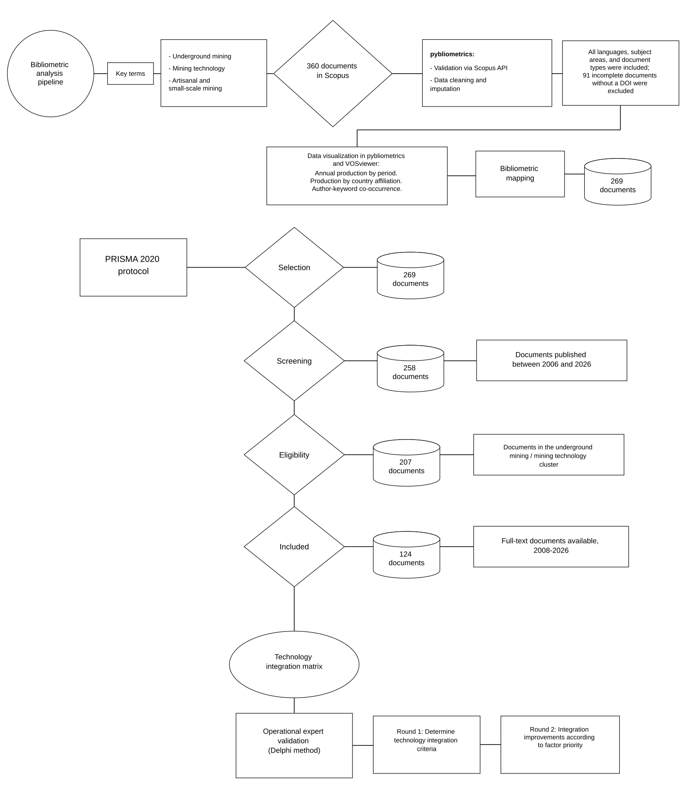
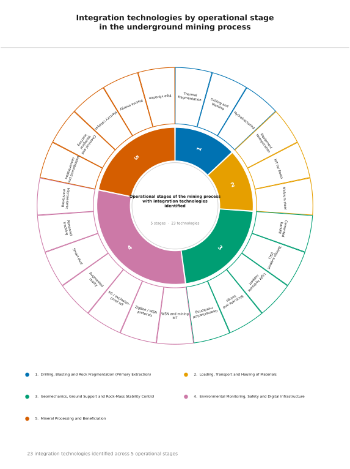

Carga de datos · portabilidad sin servidor
Este portal funciona íntegramente en el navegador: no necesita servidor ni conexión a internet. Toda la información se lee de los archivos .db (SQLite) que acompañan al manuscrito. Cargue los archivos de la carpeta db/ con el selector o arrástrelos aquí; la página detectará cada base, repintará todas las gráficas con Plotly y habilitará las descargas. No se envía ningún dato a ningún servidor.
Cargar bases .db
Arrastre aquí los archivos .db o
Ninguna base cargada todavía.
| Base | Tipo | Filas | Estado |
|---|
Resumen del portal
Este portal conecta el corpus final de la revisión sistemática (124 documentos Scopus, 2008–2026, entregado en thirdPass_124.csv) con una matriz operativa de tecnologías para la minería artesanal y de pequeña escala. Cada tecnología se cataloga por nivel de madurez tecnológica (TRL 1–9), compatibilidad con la geometría del yacimiento (incluidas vetas angostas de 2–3 m), requerimientos de inversión (CAPEX/OPEX) e impacto en seguridad y ambiente, con valores calibrados por un panel de expertos Delphi con 10–20 años de experiencia.
Metodología · flujo de la revisión sistemática (PRISMA 2020)
El corpus se construyó siguiendo la guía PRISMA 2020 y se procesó en tres fases. La fase I depura la exportación de Scopus; la fase II aplica análisis bibliométrico (bibliometrix, VOSviewer); la fase III valida los resultados con un panel Delphi.
Figura 1 · diagrama de flujo PRISMA 2020

Flujo de selección del corpus: identificación (exportación de Scopus, 360 documentos), cribado (validación de DOI y eliminación de duplicados, 269 con DOI; acotación al rango 2006–2026, 258; aislamiento del clúster «Mina subterránea × tecnología minera», 207) e inclusión (corpus cualitativo final, 124 documentos, 2008–2026) validado mediante panel Delphi.
Producción anual por periodos e impacto acumulado
Producción anual de documentos por período con impacto acumulado de citas.
Figura 3 · 23 tecnologías identificadas según z6.svg

23 tecnologías de integración identificadas en 5 etapas operativas según el análisis del corpus.
Observatorio Operativo de la UASM
Indicadores de adopción tecnológica, seguridad, cumplimiento ambiental, inversión y marco normativo por región y país (África, Latinoamérica, Asia-Pacífico y Europa). Los valores se calibraron con fuentes públicas (UNESCO, Banco Mundial, IGF) y se validaron con el panel de expertos (Delphi).
Perfil regional multidimensional
Gráfica, tabla y carga de indicadores regionales multidimensionales. Cargue un archivo .db para actualizar la tabla.
Matriz de Transferencia Tecnológica
Catálogo de tecnologías identificadas en la literatura, ordenado por geometría del yacimiento y viabilidad económica. Los campos DOCS, TRL, CAPEX, OPEX, SEG, AMB han sido eliminados de la tabla. A continuación figuran las rondas Delphi:
Red de convergencia tecnológica
Red de co-ocurrencia de tecnologías del catálogo: un vínculo une dos tecnologías cuando comparten documentos del corpus (el grosor indica el número de co-ocurrencias). Solo se muestran tecnologías con valor mayor a 0.
Explorador del corpus
Cinco vistas del corpus Scopus: 124 (corpus final cualitativo, thirdPass_124.csv), 360 (exportación original de Scopus, scopusRevisionManual.csv), 269 (corpus depurado), 258 (rango analítico 2006–2026) y 207 (clúster «Mina subterránea × tecnología minera» en 2006–2026). Seleccione una pestaña para explorar la vista correspondiente; el corpus 124 se materializa en tabla_corpus.db y el resto en corpus_<id>.db.
documentos · fuente: tabla_corpus.db
| Año | Título | Autores | Fuente | Citas | Clúster | Acceso | DOI |
|---|
Entrega científica · tabla_deliverable.db (n=124, 2008–2026)
Análisis cualitativo completo por documento: hallazgos principales, limitaciones y novedad. Descargue la tabla en CSV para la sección Data availability del manuscrito.
Bases de datos .db · fuente única de verdad
Todo lo que muestra el portal proviene de los archivos .db (SQLite) cargados por el usuario. Cada gráfica y cada tabla tiene su propia base derivada con las tablas datos (filas mostradas), base (cálculo de origen), columnas (metadatos de campos) y meta (descripción y ficha).
Inventario de bases cargadas
Cargue los .db para ver el inventario.
| Base | Tipo | Filas | Tablas | Descarga |
|---|